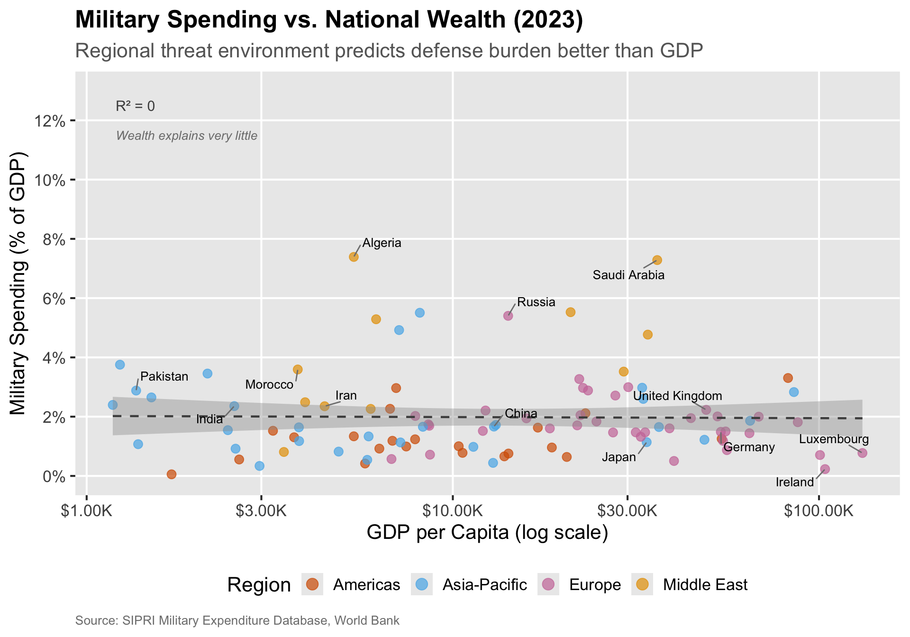
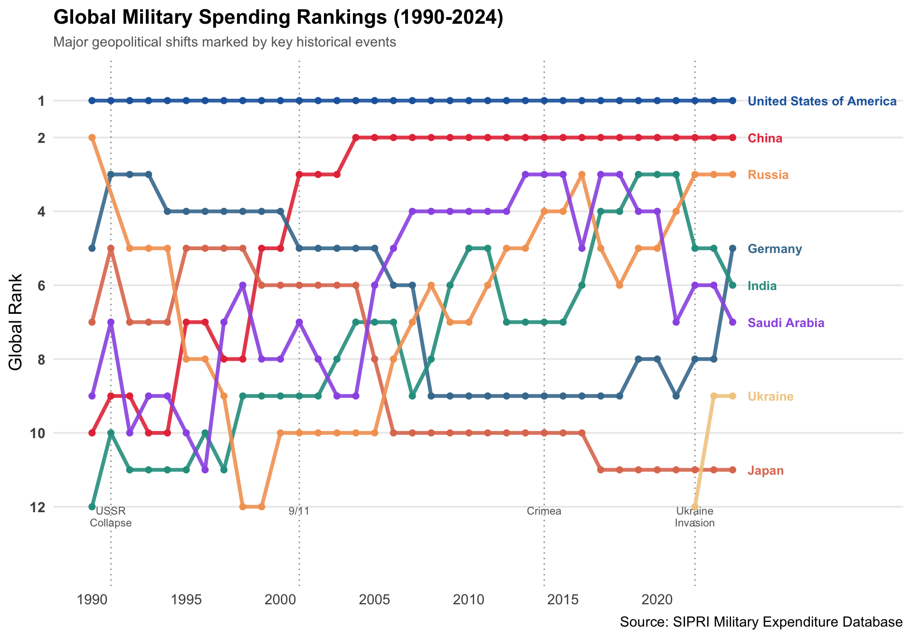
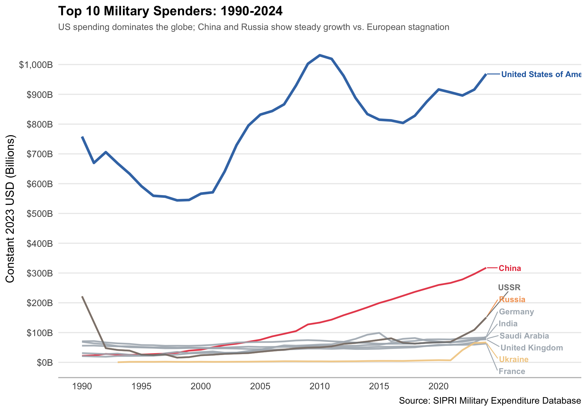
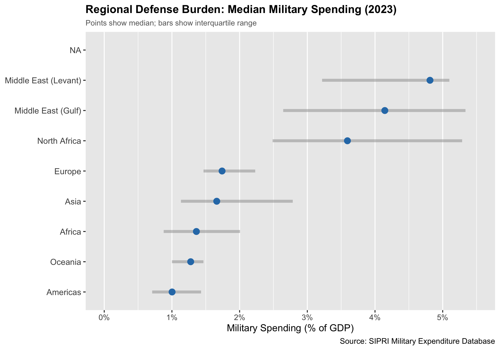
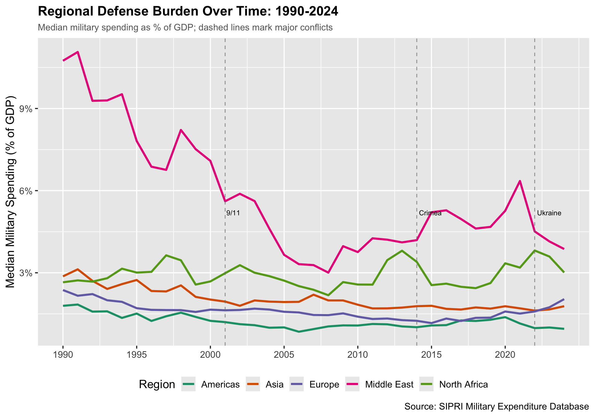
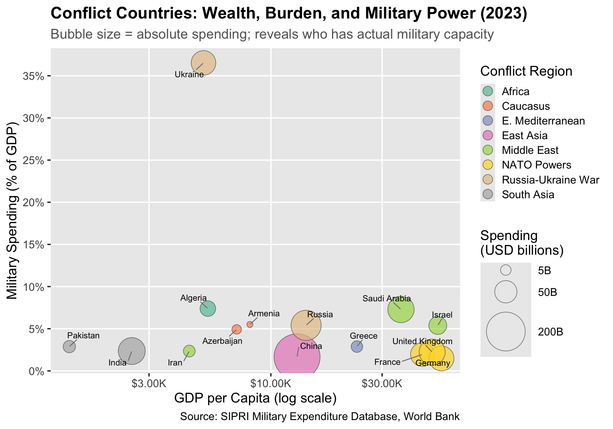
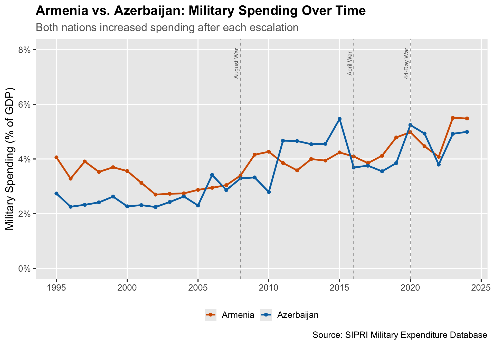
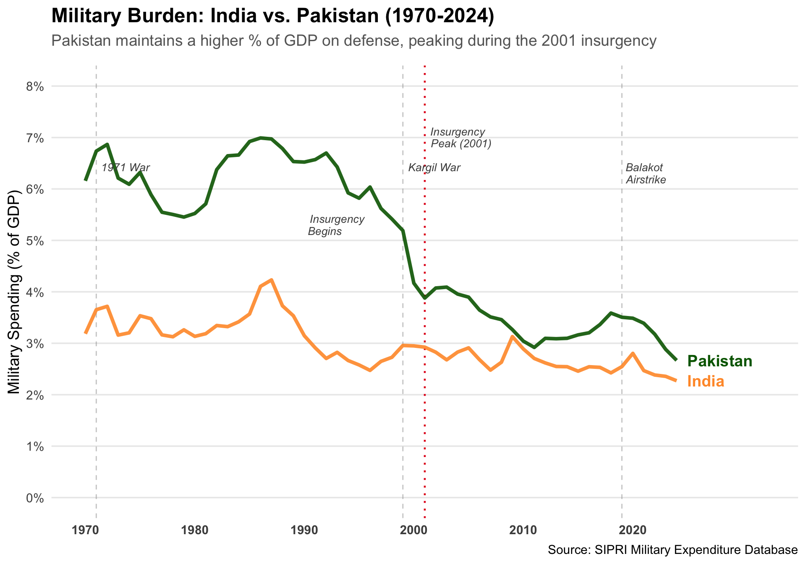
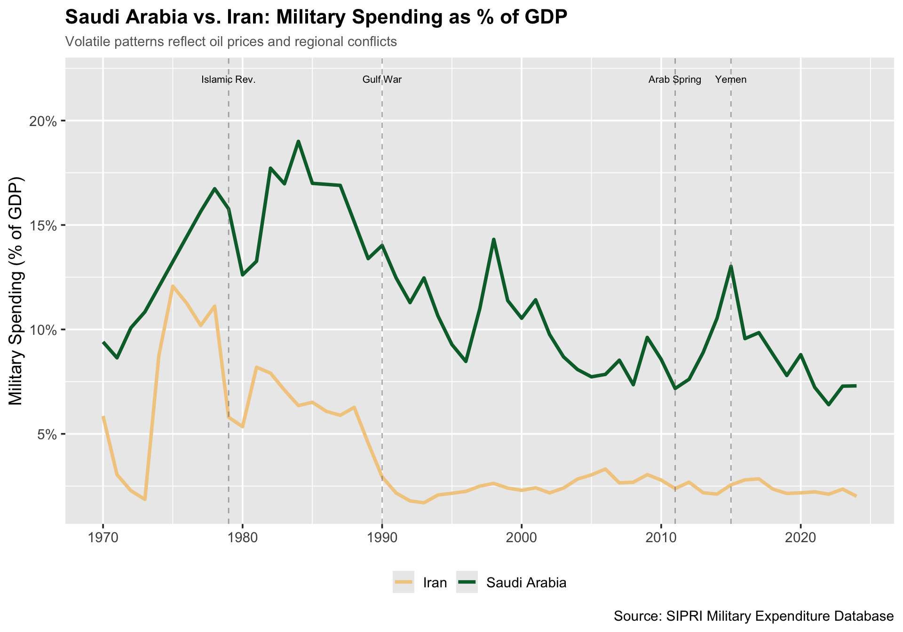
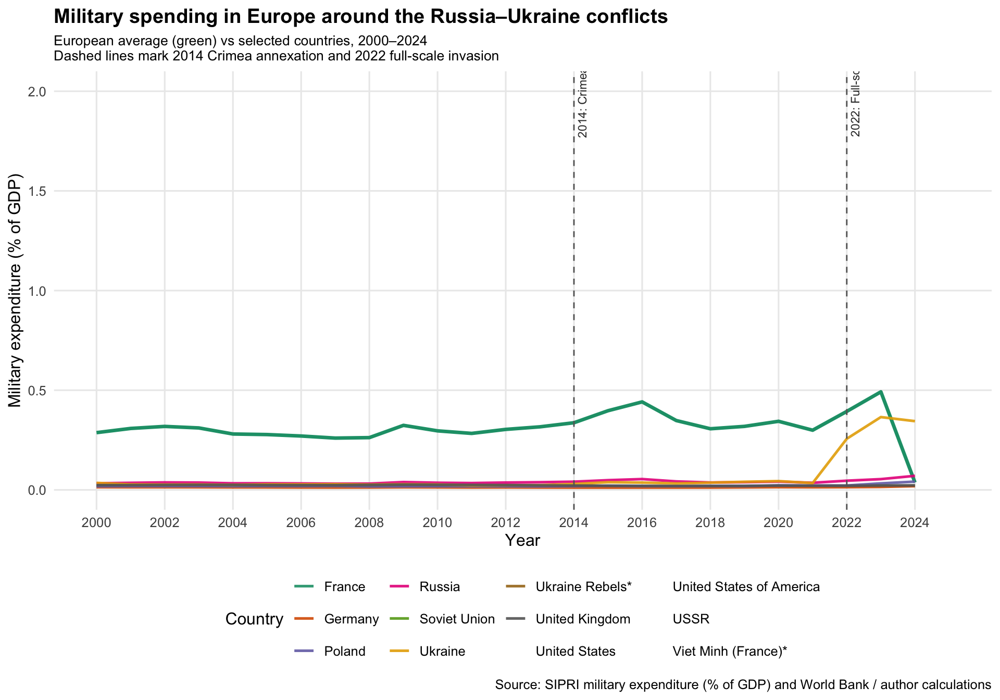

Code
library(tidyverse)
library(scales)
library(ggrepel)
# Set global theme for audience-ready graphs
theme_set(theme_grey(base_size = 14))library(tidyverse)
library(scales)
library(ggrepel)
# Set global theme for audience-ready graphs
theme_set(theme_grey(base_size = 14))# Load datasets
rq1_data <- read_csv("data/clean/rq1_wealth_spending.csv")
rq2_data <- read_csv("data/clean/rq2_arms_races.csv")# RQ1: Military Spending vs. National Wealth
# Log-scale scatterplot with regional coloring and labeled outliers
library(tidyverse)
library(scales)
library(ggrepel)
# Load data
rq1_data <- read_csv("data/clean/rq1_wealth_spending.csv")
# Data Preparation
rq1_scatter <- rq1_data |>
filter(year == 2023) |>
distinct(country, .keep_all = TRUE) |>
filter(!is.na(gdp_per_capita_usd) & !is.na(spending_pct_gdp)) |>
mutate(spending_pct = spending_pct_gdp * 100) |>
mutate(
region_label = case_when(
region_custom == "Middle East (Gulf)" ~ "Middle East",
region_custom == "North Africa" ~ "Middle East",
region_custom == "Sub-Saharan Africa" ~ "Sub-Saharan Africa",
region_custom == "Asia" ~ "Asia-Pacific",
region_custom == "Oceania" ~ "Asia-Pacific",
region_custom == "Europe" ~ "Europe",
region_custom == "Americas" ~ "Americas",
TRUE ~ NA_character_
)
) |>
filter(!is.na(region_label))
# Countries to Label
label_countries <- c(
"United States", "China", "Russia", "India",
"Israel", "Saudi Arabia", "Ukraine", "Algeria", "Morocco",
"Iceland", "Luxembourg", "Ireland", "Japan", "Germany",
"Pakistan", "Iran", "United Kingdom", "South Korea"
)
rq1_scatter <- rq1_scatter |>
mutate(label = if_else(country %in% label_countries, country, NA_character_))
# Calculate R-squared
cor_value <- cor(
log10(rq1_scatter$gdp_per_capita_usd),
rq1_scatter$spending_pct,
use = "complete.obs"
)
r_squared <- round(cor_value^2, 3)
# Create Plot
ggplot(rq1_scatter, aes(x = gdp_per_capita_usd, y = spending_pct)) +
geom_point(aes(color = region_label), alpha = 0.7, size = 3) +
geom_smooth(
method = "lm",
se = TRUE,
color = "grey30",
linetype = "dashed",
linewidth = 0.8
) +
geom_text_repel(
aes(label = label),
size = 3.5,
max.overlaps = 25,
box.padding = 0.5,
segment.color = "grey50",
seed = 42
) +
scale_x_log10(
labels = label_dollar(prefix = "$", suffix = "K", scale = 0.001),
breaks = c(1000, 3000, 10000, 30000, 100000)
) +
scale_y_continuous(
labels = label_number(suffix = "%"),
breaks = seq(0, 12, by = 2),
limits = c(0, 13)
) +
scale_color_manual(
values = c(
"Middle East" = "#E69F00",
"Europe" = "#CC79A7",
"Asia-Pacific" = "#56B4E9",
"Americas" = "#D55E00",
"Sub-Saharan Africa" = "#009E73"
),
name = "Region"
) +
annotate(
"text",
x = 1200, y = 12.5,
label = paste0("R² = ", r_squared),
hjust = 0, size = 4, color = "grey30"
) +
annotate(
"text",
x = 1200, y = 11.5,
label = "Wealth explains very little",
hjust = 0, size = 3.5, fontface = "italic", color = "grey50"
) +
labs(
title = "Military Spending vs. National Wealth (2023)",
subtitle = "Regional threat environment predicts defense burden better than GDP",
x = "GDP per Capita (log scale)",
y = "Military Spending (% of GDP)",
caption = "Source: SIPRI Military Expenditure Database, World Bank"
) +
theme_grey(16) +
theme(
plot.title = element_text(face = "bold"),
plot.subtitle = element_text(color = "grey40"),
plot.caption = element_text(size = 10, color = "grey50", hjust = 0),
legend.position = "bottom",
panel.grid.minor = element_blank()
) +
guides(color = guide_legend(nrow = 1, override.aes = list(size = 4)))
The main finding is clear: wealth explains almost nothing (R² ≈ 0). The nearly flat trend line confirms that a country’s GDP per capita has little bearing on its defense burden. Instead, regional clustering dominates — Middle Eastern countries (yellow) sit high regardless of wealth, while European nations (pink) cluster low. Notable outliers tell the real story:
Ukraine is absent from this graph — at 37% of GDP, its wartime spending would distort the entire scale. This single datapoint illustrates how existential threats override economic considerations entirely. Algeria and Morocco represent North Africa’s quiet arms race. Algeria, flush with hydrocarbon revenues, allocated 21% of all government expenditure to defense in 2024 — the highest share of any African nation. Morocco, despite two years of decline, increased spending by 2.6% in 2024. Together they account for 90% of North African military spending. Saudi Arabia and Russia both spend 6-7% despite vastly different wealth levels ($30K vs $12K GDP per capita), driven by regional power ambitions rather than economic capacity. Japan, Germany, and Ireland — all wealthy democracies — cluster below 2%, reflecting post-WWII constraints, alliance reliance, or neutrality.
The NATO 2% benchmark (dashed line) highlights a policy reality: many European allies now face pressure to meet this target, shifting from “aspirational” to “minimum” after Russia’s 2022 invasion.
Source : https://www.sipri.org/sites/default/files/2025-04/2504_fs_milex_2024.pdf
library(tidyverse)
# Assuming data is already loaded as per your previous code
# rq1_data <- read_csv("data/clean/rq1_wealth_spending.csv")
highlight_countries <- c(
"United States of America", "China", "Russia", "India", "Ukraine",
"Saudi Arabia", "Germany", "Japan"
)
rank_data <- rq1_data |>
filter(year >= 1990, !is.na(spending_constant_usd_sipri)) |>
distinct(country, year, .keep_all = TRUE) |>
group_by(year) |>
mutate(rank = min_rank(-spending_constant_usd_sipri)) |>
ungroup() |>
filter(country %in% highlight_countries)
# End labels for the right side of the chart
end_labels <- rank_data |>
filter(year == max(year))
# Key events (Positions adjusted slightly for visibility)
events <- tribble(
~year, ~label, ~y_pos,
1991, "USSR\nCollapse", 12,
2001, "9/11", 12,
2014, "Crimea", 12,
2022, "Ukraine\nInvasion", 12
)
# Create annotated bump chart
ggplot(rank_data, aes(x = year, y = rank, color = country, group = country)) +
# --- Event Markers (Vertical Lines) ---
geom_vline(
xintercept = c(1991, 2001, 2014, 2022),
linetype = "dotted",
color = "grey60",
linewidth = 0.5
) +
# --- Event Labels ---
geom_text(
data = events,
aes(x = year, y = y_pos, label = label),
inherit.aes = FALSE,
size = 3, # Slightly larger for readability
color = "grey40",
vjust = 1,
lineheight = 0.9 # Tighter line spacing for multi-line labels
) +
# --- Main Bump Lines and Points ---
geom_line(linewidth = 1.4, alpha = 0.9) +
geom_point(size = 2) +
# --- Direct Labels (Right side) ---
geom_text(
data = end_labels,
aes(x = year + 0.8, label = country),
hjust = 0,
size = 3.5,
fontface = "bold"
) +
# --- Scales ---
scale_y_reverse(
# FIX: Added '1' to breaks and changed limit to 0.5 to show Rank #1
breaks = c(1, 2, 4, 6, 8, 10, 12),
limits = c(13.5, 0.5)
) +
scale_x_continuous(
breaks = seq(1990, 2024, by = 5),
limits = c(1990, 2031) # Extra space for text labels
) +
scale_color_manual(
values = c(
"United States of America"= "#2166AC",
"China" = "#E63946",
"Russia" = "#F4A261",
"India" = "#2A9D8F",
"Saudi Arabia" = "#9B5DE5",
"Germany" = "#457B9D",
"Japan" = "#E07A5F",
"Ukraine" = "#F2CC8F"
)
) +
# --- Labels and Theme ---
labs(
title = "Global Military Spending Rankings (1990-2024)",
subtitle = "Major geopolitical shifts marked by key historical events",
x = NULL,
y = "Global Rank",
caption = "Source: SIPRI Military Expenditure Database"
) +
theme_minimal(base_size = 14) +
theme(
plot.title = element_text(face = "bold", size = 16),
plot.subtitle = element_text(color = "grey40", size = 11),
legend.position = "none",
panel.grid.minor = element_blank(),
panel.grid.major.x = element_blank(),
axis.text.y = element_text(face = "bold")
)
China’s rise is the defining trend: from #3 in 1990 to a secure #2 by 2005, where it has remained unchallenged for two decades Russia’s collapse and recovery — from #2 in 1990 to #10 by 2000 as the post-Soviet economy imploded, then climbing back to #3 by 2024 (now spending 7.1% of GDP on military) Germany’s quiet surge — jumped from #7 to #4 in 2024 after decades of restraint, now Central/Western Europe’s largest spender for the first time since reunification India’s steady climb — from #11 to #4-6 range, reflecting its emergence as a major power Ukraine’s dramatic appearance — invisible on this chart until 2022, now #8 globally with spending at 34% of GDP
library(tidyverse)
library(scales)
library(ggrepel)
# 1. Define countries and custom colors
top_countries <- c(
"United States of America", "China", "Russia", "India", "Saudi Arabia",
"United Kingdom", "Germany", "France", "Japan"
)
# Custom Palette: Semantic colors for big players, muted for others
custom_colors <- c(
"United States of America" = "#0c2c84", # Strong Navy
"China" = "#e31a1c", # Red
"Russia" = "#fd8d3c", # Orange
"India" = "#41ab5d", # Green
"Saudi Arabia" = "#807dba", # Purple
"United Kingdom" = "#9e9ac8", # Muted Purple/Blue
"Germany" = "#6baed6", # Muted Blue
"France" = "#9ecae1", # Light Blue
"Japan" = "#c6dbef", # Very Light Blue
"Rest of the World" = "#d9d9d9" # Grey background
)
# 2. Data Preparation: Calculate 'Rest of World' to get 100% stack
rq1_share_full <- rq1_data |>
filter(year >= 1990, !is.na(spending_constant_usd_sipri)) |>
group_by(year) |>
mutate(world_total = sum(spending_constant_usd_sipri, na.rm = TRUE)) |>
ungroup() |>
# Group countries not in the top list into "Rest of the World"
mutate(
country_group = if_else(country %in% top_countries, country, "Rest of the World")
) |>
group_by(year, country_group) |>
summarise(
spending = sum(spending_constant_usd_sipri, na.rm = TRUE),
world_total = first(world_total),
.groups = "drop"
) |>
mutate(share = spending / world_total)
# 3. Fix Factor Levels for Stacking Order
# (Rest of World on top, USA on bottom for stability)
level_order <- c("Rest of the World", rev(top_countries))
rq1_share_full$country_group <- factor(rq1_share_full$country_group, levels = level_order)
# 4. Create Label Data (for the right side of the chart)
# We calculate the position at the last year (2024)
label_data <- rq1_share_full |>
filter(year == max(year)) |>
arrange(desc(country_group)) |>
mutate(
# Calculate the midpoint of each area for label placement
cumulative_share = cumsum(share),
midpoint = cumulative_share - (share / 2)
)
# 5. Plot
ggplot(rq1_share_full, aes(x = year, y = share, fill = country_group)) +
geom_area(alpha = 0.9, color = "white", linewidth = 0.1) + # Thin white lines separate blocks
# Direct Labels on the right side
geom_text(
data = label_data,
aes(x = year + 0.5, y = midpoint, label = country_group, color = country_group),
hjust = 0, size = 3.5, fontface = "bold"
) +
scale_y_continuous(labels = percent_format(), expand = c(0, 0)) +
scale_x_continuous(
breaks = seq(1990, 2024, by = 5),
expand = c(0, 0),
limits = c(1990, 2032) # Extra space for labels
) +
scale_fill_manual(values = custom_colors) +
scale_color_manual(values = custom_colors) + # For the text labels
labs(
title = "Share of Global Military Spending (1990-2024)",
subtitle = "The US retains dominance (~37%), while China has grown to ~15%",
x = NULL,
y = NULL,
caption = "Source: SIPRI Military Expenditure Database"
) +
theme_minimal(base_size = 14) +
theme(
legend.position = "none", # Hide legend (using direct labels instead)
plot.title = element_text(face = "bold", size = 18),
plot.subtitle = element_text(color = "grey40", margin = margin(b = 15)),
panel.grid.minor = element_blank(),
panel.grid.major.x = element_blank(),
axis.text.y = element_text(color = "grey50")
)
This stacked area chart reveals the fundamental structure of global military power — and how little it has changed despite apparent turbulence. The US dominance story:
Peaked near 50% during the post-9/11 wars in Iraq and Afghanistan (~2010) Declined to ~37% by 2024 — but this is relative decline, not absolute (US spending reached $997B in 2024) Still allocates 3.2× more than China, the #2 spender
China’s expansion:
Grew from ~2% (1990) to ~12-15% (2024) 30 consecutive years of growth — the longest unbroken streak in SIPRI’s database The expanding red band is the single most important structural shift in this chart
The “Rest of World” squeeze:
The grey band shrunk from ~30% to ~20% As US and China dominate, everyone else’s relative share declines European allies, despite recent increases, remain a thin collective band
Bottom line: Two countries now control nearly half of global military spending
library(tidyverse)
library(scales)
library(ggrepel)
# 1. Identify Top 10 Spenders (Same logic as yours, just safer sorting)
top_spenders <- rq1_data |>
filter(year >= 2000) |>
group_by(country) |>
summarise(latest_spending = last(na.omit(spending_constant_usd_sipri))) |>
arrange(desc(latest_spending)) |>
slice_head(n = 10) |>
pull(country)
# 2. Filter data for plotting
rq1_timeseries_data <- rq1_data |>
filter(country %in% top_spenders, year >= 1990) |>
filter(!is.na(spending_constant_usd_sipri)) |>
mutate(spending_billions = spending_constant_usd_sipri / 1000)
# 3. Define Focus Colors (Highlight Key Players, Grey out others)
# We highlight US (Dominant), China (Rising), Russia & Ukraine (Conflict)
custom_colors <- c(
"United States of America" = "#2166AC", # Strong Blue
"China" = "#E63946", # Red
"Russia" = "#F4A261", # Orange
"Ukraine" = "#F2CC8F", # Gold/Yellow
"India" = "#ADB5BD", # Grey
"Saudi Arabia" = "#ADB5BD",
"United Kingdom" = "#ADB5BD",
"Germany" = "#ADB5BD",
"France" = "#ADB5BD",
"Japan" = "#ADB5BD"
)
# Fallback for any country not named above
default_color <- "grey80"
# 4. Create Label Data (End of lines)
end_labels <- rq1_timeseries_data |>
filter(year == max(year)) |>
arrange(desc(spending_billions))
# 5. Plot
ggplot(rq1_timeseries_data, aes(x = year, y = spending_billions, color = country)) +
# Main Lines
geom_line(aes(size = country == "United States of America"), alpha = 0.9) +
# Control line thickness (Make US thicker)
scale_size_manual(values = c(`FALSE` = 1, `TRUE` = 1.5), guide = "none") +
# Direct Labels (Replaces Legend)
geom_text_repel(
data = end_labels,
aes(label = country, x = year),
hjust = 0,
direction = "y",
nudge_x = 1, # Push labels slightly right
size = 3.5,
fontface = "bold",
xlim = c(2024, 2035) # Allow labels to extend into the margin
) +
scale_y_continuous(
labels = label_dollar(suffix = "B"),
breaks = seq(0, 1000, by = 100)
) +
scale_x_continuous(
breaks = seq(1990, 2024, by = 5),
limits = c(1990, 2030) # Add empty space on right for labels
) +
scale_color_manual(values = custom_colors) +
labs(
title = "Top 10 Military Spenders: 1990-2024",
subtitle = "US spending dominates the globe; China and Russia show steady growth vs. European stagnation",
x = NULL,
y = "Constant 2023 USD (Billions)",
caption = "Source: SIPRI Military Expenditure Database"
) +
theme_minimal(base_size = 14) +
theme(
legend.position = "none", # No legend needed!
plot.title = element_text(face = "bold", size = 16),
plot.subtitle = element_text(color = "grey40", size = 11, margin = margin(b = 10)),
panel.grid.minor = element_blank(),
panel.grid.major.x = element_blank(),
axis.line.x = element_line(color = "grey")
)
US spending dominates the globe; China and Russia show steady growth vs. European stagnation.
This is why NATO’s 2% target matters — European allies collectively spend ~$454B, but fragmented across 30+ countries.
rq1_regional <- rq1_data |>
filter(year == 2023) |>
filter(!is.na(spending_pct_gdp)) |>
mutate(spending_pct = spending_pct_gdp * 100) |>
group_by(region_custom) |>
summarise(
median_spending = median(spending_pct, na.rm = TRUE),
n_countries = n(),
iqr_low = quantile(spending_pct, 0.25, na.rm = TRUE),
iqr_high = quantile(spending_pct, 0.75, na.rm = TRUE)
) |>
filter(n_countries >= 3) |>
arrange(median_spending) |>
mutate(region_custom = factor(region_custom, levels = region_custom))
ggplot(rq1_regional, aes(x = median_spending, y = region_custom)) +
geom_segment(aes(x = iqr_low, xend = iqr_high,
y = region_custom, yend = region_custom),
color = "grey60", linewidth = 2, alpha = 0.5) +
geom_point(size = 4, color = "#2C7BB6") +
scale_x_continuous(labels = label_percent(scale = 1, suffix = "%"),
breaks = seq(0, 5, by = 1), limits = c(0, 5.5)) +
labs(
title = "Regional Defense Burden: Median Military Spending (2023)",
subtitle = "Points show median; bars show interquartile range",
x = "Military Spending (% of GDP)",
y = NULL,
caption = "Source: SIPRI Military Expenditure Database"
) +
theme(plot.title = element_text(face = "bold", size = 16),
plot.subtitle = element_text(size = 11, color = "grey40"),
axis.text.y = element_text(size = 12),
panel.grid.major.y = element_blank())
Clear regional hierarchy:
Middle East (Levant & Gulf) tops the chart at ~4-5% median — conflict zones and oil-funded militaries North Africa (Algeria, Morocco rivalry) at ~3.5% Europe at ~1.5% — below NATO’s 2% guideline (though this is changing rapidly post-2022) Americas lowest at ~1% — the US skews this; Latin America spends very little
The wide IQR bars matter:
Middle East has the widest spread — from wealthy Gulf states to war-torn nations Europe’s narrow band reflects convergence toward NATO norms Africa’s wide spread reflects extreme diversity (South Africa cutting, Sahel juntas increasing)
The NA category likely captures countries with missing or unreliable data. Key insight: Regional threat environment — not wealth — determines military burden. The Middle East spends 3-4× the share of GDP that the Americas do, regardless of income levels.
key_regions <- c("Europe", "Asia", "Americas", "Middle East (Gulf)", "North Africa")
rq1_regional_ts <- rq1_data |>
filter(region_custom %in% key_regions, year >= 1990) |>
filter(!is.na(spending_pct_gdp)) |>
mutate(spending_pct = spending_pct_gdp * 100) |>
group_by(region_custom, year) |>
summarise(median_spending = median(spending_pct, na.rm = TRUE), .groups = "drop") |>
mutate(region_label = case_when(
region_custom == "Middle East (Gulf)" ~ "Middle East",
TRUE ~ region_custom
))
ggplot(rq1_regional_ts, aes(x = year, y = median_spending, color = region_label)) +
geom_line(linewidth = 1.2) +
geom_vline(xintercept = c(2001, 2014, 2022),
linetype = "dashed", color = "grey50", alpha = 0.7) +
annotate("text", x = 2001, y = 5.2, label = "9/11", size = 3, hjust = -0.1) +
annotate("text", x = 2014, y = 5.2, label = "Crimea", size = 3, hjust = -0.1) +
annotate("text", x = 2022, y = 5.2, label = "Ukraine", size = 3, hjust = -0.1) +
scale_y_continuous(labels = label_percent(scale = 1, suffix = "%")) +
scale_x_continuous(breaks = seq(1990, 2024, by = 5)) +
scale_color_brewer(palette = "Dark2", name = "Region") +
labs(
title = "Regional Defense Burden Over Time: 1990-2024",
subtitle = "Median military spending as % of GDP; dashed lines mark major conflicts",
x = NULL,
y = "Median Military Spending (% of GDP)",
caption = "Source: SIPRI Military Expenditure Database"
) +
theme(legend.position = "bottom",
plot.title = element_text(face = "bold", size = 16),
plot.subtitle = element_text(size = 11, color = "grey40")) +
guides(color = guide_legend(nrow = 1))
library(tidyverse)
library(scales)
library(ggrepel)
# Load data
rq1_data <- read_csv("data/clean/rq1_wealth_spending.csv")
# Define Conflict Countries
conflict_countries <- c(
# Eastern Europe
"Russia", "Ukraine",
# Caucasus
"Armenia", "Azerbaijan",
# Middle East
"Israel", "Iran", "Saudi Arabia", "Yemen", "Syria",
# South Asia
"India", "Pakistan",
# East Asia tensions
"China", "Taiwan", "South Korea",
# Eastern Mediterranean
"Greece", "Turkey",
# Africa
"Ethiopia", "Sudan", "Algeria",
# Major NATO powers for reference
"United States", "United Kingdom", "Germany", "France"
)
# X = GDP per capita, Y = Spending % GDP, Size = Absolute spending
bubble_data <- rq1_data |>
filter(year == 2023) |>
distinct(country, .keep_all = TRUE) |>
filter(country %in% conflict_countries) |>
filter(!is.na(gdp_per_capita_usd) & !is.na(spending_pct_gdp) &
!is.na(spending_constant_usd_sipri)) |>
mutate(
spending_pct = spending_pct_gdp * 100,
spending_billions = spending_constant_usd_sipri / 1000
) |>
mutate(
conflict_group = case_when(
country %in% c("Russia", "Ukraine") ~ "Russia-Ukraine War",
country %in% c("Armenia", "Azerbaijan") ~ "Caucasus",
country %in% c("Israel", "Iran", "Saudi Arabia",
"Yemen", "Syria") ~ "Middle East",
country %in% c("India", "Pakistan") ~ "South Asia",
country %in% c("China", "Taiwan", "South Korea") ~ "East Asia",
country %in% c("Greece", "Turkey") ~ "E. Mediterranean",
country %in% c("Ethiopia", "Sudan", "Algeria") ~ "Africa",
TRUE ~ "NATO Powers"
)
)
ggplot(bubble_data, aes(x = gdp_per_capita_usd, y = spending_pct)) +
geom_point(
aes(size = spending_billions, fill = conflict_group),
shape = 21,
color = "grey30",
alpha = 0.7
) +
geom_text_repel(
aes(label = country),
size = 3.5,
max.overlaps = 30,
box.padding = 0.6,
segment.color = "grey50",
seed = 42
) +
scale_x_log10(
labels = label_dollar(prefix = "$", suffix = "K", scale = 0.001),
breaks = c(1000, 3000, 10000, 30000, 100000)
) +
scale_y_continuous(
labels = label_number(suffix = "%"),
breaks = seq(0, 40, by = 5)
) +
scale_size_continuous(
name = "Spending\n(USD billions)",
range = c(3, 25),
breaks = c(5, 50, 200, 800),
labels = label_number(suffix = "B")
) +
scale_fill_brewer(palette = "Set2", name = "Conflict Region") +
labs(
title = "Conflict Countries: Wealth, Burden, and Military Power (2023)",
subtitle = "Bubble size = absolute spending; reveals who has actual military capacity",
x = "GDP per Capita (log scale)",
y = "Military Spending (% of GDP)",
caption = "Source: SIPRI Military Expenditure Database, World Bank"
) +
theme_grey(16) +
theme(
plot.title = element_text(face = "bold"),
plot.subtitle = element_text(color = "grey40"),
legend.position = "right",
panel.grid.minor = element_blank()
) +
guides(
fill = guide_legend(order = 1, override.aes = list(size = 5)),
size = guide_legend(order = 2)
)
The three-dimensional view reveals what flat charts hide.This bubble chart encodes three variables: GDP per capita (X), military burden (Y), and absolute spending (bubble size). The result exposes fundamental asymmetries: Ukraine sits alone in the upper-left — poor (~$5K GDP/capita) but allocating an extraordinary 37% of GDP to defense. Its medium-sized bubble reveals the limits of burden: even at wartime sacrifice levels, absolute spending remains constrained by economic size.
China’s massive bubble dominates despite sitting at just ~2% burden — wealth enables military power without economic strain. Compare to Pakistan: similar burden (~3%) but a tiny bubble because the underlying economy is far smaller.
Saudi Arabia and Israel — both wealthy AND high-burden — occupy the upper-right quadrant. These are countries that can afford to sacrifice heavily.
The NATO cluster (Germany, France, UK) shows moderate wealth, low burden (~2%), but substantial bubbles — collective alliance spending substitutes for individual sacrifice.
Russia’s bubble is larger than its GDP/capita (~$12K) would suggest because 7% burden on a large economy still generates significant absolute spending. Key insight: Burden measures sacrifice; bubble size measures actual military capacity. Pakistan sacrifices more than China (higher % GDP) but has far less military power.
caucasus_data <- rq1_data |>
filter(country %in% c("Armenia", "Azerbaijan")) |>
filter(year >= 1995) |>
distinct(country, year, .keep_all = TRUE) |>
filter(!is.na(spending_pct_gdp)) |>
mutate(spending_pct = spending_pct_gdp * 100)
# Key conflict events
conflict_events <- tribble(
~year, ~event,
2008, "August War",
2016, "April War",
2020, "44-Day War"
)
ggplot(caucasus_data, aes(x = year, y = spending_pct, color = country)) +
geom_line(linewidth = 1.2) +
geom_point(size = 2) +
geom_vline(
data = conflict_events,
aes(xintercept = year),
linetype = "dashed",
color = "grey50",
alpha = 0.7
) +
geom_text(
data = conflict_events,
aes(x = year, y = 7.5, label = event),
inherit.aes = FALSE,
angle = 90,
vjust = -0.5,
size = 3,
color = "grey40"
) +
scale_y_continuous(
labels = label_number(suffix = "%"),
breaks = seq(0, 8, by = 2),
limits = c(0, 8)
) +
scale_x_continuous(breaks = seq(1995, 2025, by = 5)) +
scale_color_manual(
values = c("Armenia" = "#D55E00", "Azerbaijan" = "#0072B2"),
name = NULL
) +
labs(
title = "Armenia vs. Azerbaijan: Military Spending Over Time",
subtitle = "Both nations increased spending after each escalation",
x = NULL,
y = "Military Spending (% of GDP)",
caption = "Source: SIPRI Military Expenditure Database"
) +
theme_grey(16) +
theme(
plot.title = element_text(face = "bold"),
plot.subtitle = element_text(color = "grey40"),
legend.position = "bottom",
panel.grid.minor = element_blank()
)
Three conflicts are marked:
August War (2008): Both countries began steady increases afterward April War (2016): A brief spike, especially for Azerbaijan 44-Day War (2020): The decisive conflict — Azerbaijan’s years of investment paid off
Key patterns:
1995-2005: Azerbaijan consistently spent more (4% vs 2-3%), funded by emerging oil revenues 2005-2010: Convergence — both countries ramped up, lines cross around 2008 2010-2020: Parallel increases, with Azerbaijan maintaining a slight edge Post-2020: Armenia increased spending AFTER defeat, while Azerbaijan stabilized — the loser is now scrambling to rebuild
The underlying asymmetry: Azerbaijan’s oil wealth allowed sustained investment; Armenia, lacking natural resources, could only match this through higher economic sacrifice. The 2020 war outcome reflects this imbalance.
library(tidyverse)
library(scales)
library(ggrepel)
# 1. Prepare Data
india_pakistan <- rq2_data |>
filter(country %in% c("India", "Pakistan"), year >= 1970) |>
filter(!is.na(spending_pct_gdp_sipri)) |>
mutate(spending_pct = spending_pct_gdp_sipri * 100) |>
distinct(country, year, .keep_all = TRUE)
# 2. Define Key Events (Wars + Insurgency Peak)
events <- tribble(
~year, ~y_pos, ~label,
1971, 6.5, "1971 War",
1990, 5.5, "Insurgency\nBegins", # Start of major violence/exodus
1999, 6.5, "Kargil War",
2001, 7.2, "Insurgency\nPeak (2001)", # Deadliest year (~4,500 deaths)
2019, 6.5, "Balakot\nAirstrike"
)
# 3. Label for Lines (Right side of the chart)
line_labels <- india_pakistan |>
filter(year == max(year))
# 4. Create Improved Plot
ggplot(india_pakistan, aes(x = year, y = spending_pct, color = country)) +
# A. Event Lines (Vertical dashed)
geom_vline(
xintercept = c(1971, 1999, 2019),
linetype = "dashed", color = "grey60", alpha = 0.5
) +
# B. Special Highlight for Insurgency Peak (Red Dotted Line)
geom_vline(xintercept = 2001, linetype = "dotted", color = "#E41A1C", linewidth = 0.8) +
# C. Main Lines
geom_line(linewidth = 1.5, alpha = 0.9) +
# D. Event Text Labels
geom_text(
data = events,
aes(x = year, y = y_pos, label = label),
inherit.aes = FALSE,
angle = 0, # Horizontal text is easier to read than 90-degree
vjust = 1, hjust = -0.1, # Shift slightly right of the line
size = 3.5,
fontface = "italic",
color = "grey30",
lineheight = 0.9
) +
# E. Direct Labels for Countries (Replaces Legend)
geom_text(
data = line_labels,
aes(x = year + 1, label = country),
hjust = 0, fontface = "bold", size = 5
) +
# F. Scales & Colors
scale_y_continuous(
labels = label_percent(scale = 1, suffix = "%"),
limits = c(0, 8), # Set nice limits to fit labels
breaks = seq(0, 8, 1)
) +
scale_x_continuous(
breaks = seq(1970, 2024, by = 10),
limits = c(1970, 2032) # Extra space for labels
) +
scale_color_manual(
values = c("India" = "#FF9933", "Pakistan" = "#006400") # Saffron vs Dark Green
) +
# G. Theme & Titles
labs(
title = "Military Burden: India vs. Pakistan (1970-2024)",
subtitle = "Pakistan maintains a higher % of GDP on defense, peaking during the 2001 insurgency",
x = NULL,
y = "Military Spending (% of GDP)",
caption = "Source: SIPRI Military Expenditure Database"
) +
theme_minimal(base_size = 14) +
theme(
legend.position = "none", # No legend needed
plot.title = element_text(face = "bold", size = 18),
plot.subtitle = element_text(color = "grey40", margin = margin(b = 15)),
panel.grid.minor = element_blank(),
panel.grid.major.x = element_blank(),
axis.text.x = element_text(face = "bold")
)
Pakistan maintains a higher % of GDP on defense, peaking during the 2001 insurgency. This 54-year view reveals a fundamental asymmetry: Pakistan’s arc:
Peaked at ~7% during the 1980s (Soviet-Afghan war, US military aid) “Insurgency Begins” (late 1980s) marks the start of internal conflict burden Second peak around 2001 (“Insurgency Peak”) — post-9/11, Taliban spillover Gradual decline since, now at ~2.7%
India’s steady decline:
Started around 3.5% in 1970 Brief spike after 1971 war Steady downward trend as economy grew faster than military spending Now at ~2.4% — the lowest in this 54-year period
Key events marked:
1971 War: Brief spike for both, previous years military modernisation data is not present. Expected that India spending must have gone up after 1962 war with China. And India Soviet Strategic Partnership for depfence. Kargil War (1999): Barely visible — too short to affect annual spending data Balakot Airstrike (2019): No significant spending change — symbolic rather than sustained
The convergence story: Both countries have reduced burden over time as GDP growth outpaced military spending growth. The gap has narrowed from ~4 percentage points (1980s) to less than 1 point today.
saudi_iran <- rq2_data |>
filter(country %in% c("Saudi Arabia", "Iran"), year >= 1970) |>
filter(!is.na(spending_pct_gdp_sipri)) |>
mutate(spending_pct = spending_pct_gdp_sipri * 100) |>
distinct(country, year, .keep_all = TRUE)
ggplot(saudi_iran, aes(x = year, y = spending_pct, color = country)) +
geom_line(linewidth = 1.3) +
geom_vline(xintercept = c(1979, 1990, 2011, 2015),
linetype = "dashed", color = "grey50", alpha = 0.6) +
annotate("text", x = 1979, y = 22, label = "Islamic Rev.", size = 2.8) +
annotate("text", x = 1990, y = 22, label = "Gulf War", size = 2.8) +
annotate("text", x = 2011, y = 22, label = "Arab Spring", size = 2.8) +
annotate("text", x = 2015, y = 22, label = "Yemen", size = 2.8) +
scale_y_continuous(labels = label_percent(scale = 1, suffix = "%"),
breaks = seq(0, 25, by = 5)) +
scale_x_continuous(breaks = seq(1970, 2024, by = 10)) +
scale_color_manual(values = c("Iran" = "#F2CC8F", "Saudi Arabia" = "#006C35")) +
labs(
title = "Saudi Arabia vs. Iran: Military Spending as % of GDP",
subtitle = "Volatile patterns reflect oil prices and regional conflicts",
x = NULL,
y = "Military Spending (% of GDP)",
caption = "Source: SIPRI Military Expenditure Database"
) +
theme(legend.position = "bottom",
legend.title = element_blank(),
plot.title = element_text(face = "bold", size = 16),
plot.subtitle = element_text(size = 11, color = "grey40"))
Volatile patterns reflect oil prices and regional conflicts — but also a fundamental asymmetry. This is the most dramatic of the rivalry charts: Saudi Arabia’s rollercoaster:
1970s: Low (~5%), then Islamic Revolution spike 1980s peak (~19%): Iran-Iraq War fears, oil boom funding Gulf War (1990): Another spike to ~14% Post-2000 decline: Gradual reduction as threat perception eased Arab Spring (2011) + Yemen (2015): Renewed increases Current (~7%): Still among the highest burdens globally
Iran’s constrained flatline:
Pre-revolution: Rising with oil wealth Islamic Revolution (1979): Peak at ~12% (war with Iraq imminent) Post-1990: Collapsed to ~2-3% and stayed there Sanctions effect: US economic sanctions have crippled Iran’s ability to fund military growth Current (~2%): Fraction of Saudi burden despite equal threat perception
The divergence: Saudi Arabia’s spending tracks oil prices and regional threats. Iran’s spending is constrained by sanctions and economic isolation — it cannot spend even if it wants to. This is why Saudi Arabia outspends Iran ~10:1 in absolute terms despite similar rhetoric.
if (file.exists("data/clean/rq3_conflicts.rds")) {
rq3 <- read_rds("data/clean/rq3_conflicts.rds")
} else if (file.exists("data/clean/rq3_conflicts.csv")) {
rq3 <- read_csv("data/clean/rq3_conflicts.csv", show_col_types = FALSE)
} else {
stop("rq3_conflicts not found. Run Clean_data.R first.")
}
# Focus on 2000–2024 for recent conflicts
rq3_recent <- rq3 %>%
filter(year >= 2000)
# Define key actors to highlight
focus_iso3 <- c("UKR", "RUS", "DEU", "FRA", "GBR", "POL", "USA")
rq3_focus <- rq3_recent %>%
filter(iso3c %in% focus_iso3)
# Compute European average (unweighted mean across European countries)
europe_avg <- rq3_recent %>%
filter(region == "Europe") %>%
group_by(year) %>%
summarise(
spending_pct_gdp = mean(spending_pct_gdp, na.rm = TRUE),
.groups = "drop"
) %>%
mutate(country = "Europe average")
# --------------------------------------------------------------------
# 2. Build explanatory event-study plot
# --------------------------------------------------------------------
gg_rq3 <- ggplot() +
# Europe average line
geom_line(
data = europe_avg,
aes(x = year, y = spending_pct_gdp),
color = "#1b9e77",
linewidth = 1.2
) +
# Key countries
geom_line(
data = rq3_focus,
aes(x = year, y = spending_pct_gdp, color = country, group = country),
linewidth = 0.9,
alpha = 0.9
) +
# Conflict markers
geom_vline(xintercept = 2014, linetype = "dashed", color = "grey40") +
geom_vline(xintercept = 2022, linetype = "dashed", color = "grey40") +
annotate(
"text",
x = 2014, y = Inf, vjust = 1.5,
label = "2014: Crimea annexation",
angle = 90, size = 3, color = "grey20"
) +
annotate(
"text",
x = 2022, y = Inf, vjust = 1.5,
label = "2022: Full-scale invasion",
angle = 90, size = 3, color = "grey20"
) +
scale_y_continuous(
name = "Military expenditure (% of GDP)",
labels = scales::number_format(accuracy = 0.1),
limits = c(0, 2)
) +
scale_x_continuous(
name = "Year",
breaks = seq(2000, 2024, by = 2)
) +
scale_color_brewer(palette = "Dark2") +
labs(
title = "Military spending in Europe around the Russia–Ukraine conflicts",
subtitle = "European average (green) vs selected countries, 2000–2024\nDashed lines mark 2014 Crimea annexation and 2022 full-scale invasion",
caption = "Source: SIPRI military expenditure (% of GDP) and World Bank / author calculations",
color = "Country"
) +
theme_minimal(base_size = 12) +
theme(
legend.position = "bottom",
legend.box = "vertical",
plot.title = element_text(face = "bold"),
plot.subtitle = element_text(size = 10),
panel.grid.minor = element_blank()
)
ggsave(
filename = "figures/rq3_europe_ukraine_event_study.png",
plot = gg_rq3,
width = 9,
height = 5,
dpi = 300
)
cat("\nSaved RQ3 event-study plot to figures/rq3_europe_ukraine_event_study.png\n")
Saved RQ3 event-study plot to figures/rq3_europe_ukraine_event_study.pnggg_rq3
The above plot shows how military spending as a share of GDP evolved in Europe and key actors around the Russia–Ukraine conflicts. From 2000 to the early 2010s, the European average remains low and relatively flat, hovering around roughly 2% of GDP or less, with no clear upward trend. After the 2014 annexation of Crimea , there is only a modest increase, indicating that European governments responded cautiously and slowly in budgetary terms. In contrast, following the 2022 full‑scale invasion , both the European average and especially Ukraine’s own spending jump sharply, while Russia and major NATO members (Germany, France, the UK, Poland, the United States) show visible but more gradual increases. We can see increases in global military expenditure, especially from Europe after the conflicts present on the graphs.